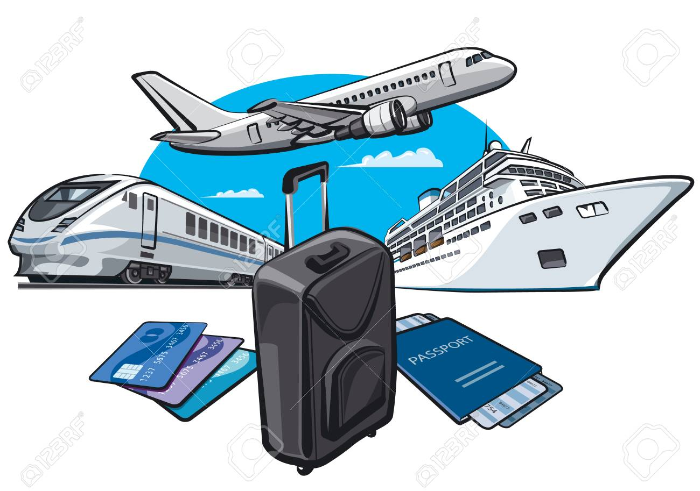
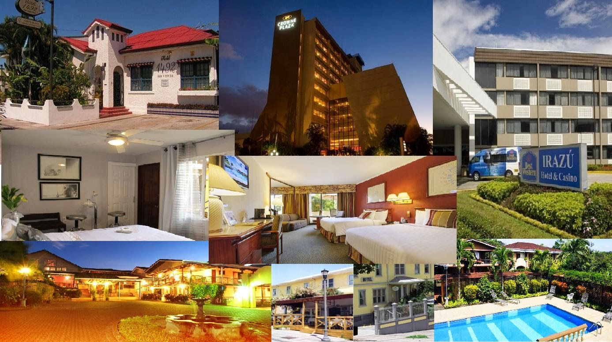
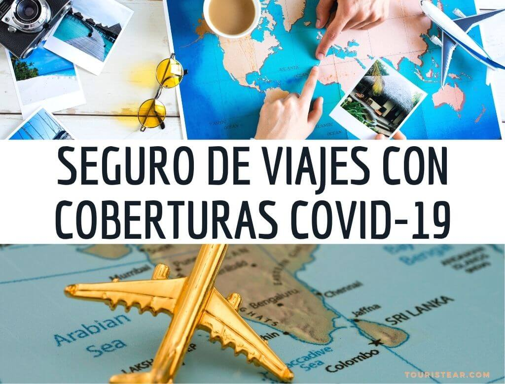

Planificá tu viaje
Cualquiera que sea el viaje a planificar, independientemente del destino o de la duración, siempre
surgen
las mismas dudas. ¿Cómo conseguir los vuelos con los mejores precios? ¿En qué página reservar el
alojamiento? ¿Necesitaré vacunas y visado? Y mil y una más… En esta página te explicamos paso a paso
cómo planificar un viaje desde cero. También recopilamos todos los trucos y webs que nosotros usamos
a
la hora de preparar los viajes.
¡Esperamos que te ayuden con el tuyo!
Elegí tu destino

Puede ser la parte más sencilla o la más complicada. Si ya sabes cuál es el viaje de tu vida,
entonces pasa al siguiente punto, pero si dispones de unas semanas libres y no tienes ni pajolera
idea de dónde ir, ¿cómo elegir el destino?.
No existe una fórmula secreta, simplemente es cuestión de preferencias y situación personal. Aunque
sí que puedes tener en cuenta estas pautas:
Primero, elimina todos aquellos países que, por presupuesto o tiempo, no encajan.
Por ejemplo, si tienes 10 días obviamente no te vas a ir a la otra punta del mundo, perderías casi
la mitad de tus vacaciones en aviones. O si tienes un presupuesto de 1.000€, está claro que no
puedes irte 3 semanas a la Polinesia Francesa.
Segundo, investiga el clima del destino en el mes que vas a ir. No quieres chuparte
la época de monzones, o que el calor sea tan asfixiante que no puedas salir del hotel. Por ejemplo,
ir a Egipto en julio es una locura, o viajar a Filipinas en plena estación de lluvias te arruinará
el viaje casi seguro. Cualquiera de las webs de clima podrían ser fiables, nosotros buscamos
“average weather [nombre del país]”, y revisamos las dos o tres primeras (entre ellas probablemente
Accuweather ).
Luego pregúntate qué ofrece cada sitio y si eso va contigo. ¿Eres urbanit@ al
máximo, o disfrutas de destinos rurales? ¿Te va la playa, o prefieres la montaña? ¿Quieres hacer
trekkings? ¿Te va la aventura? ¿Qué importancia tiene la gastronomía?… De esta forma irás dando
forma a tu viaje ideal, y verás que en un ratito quedarán solo un puñado de opciones.
Por último, amplía tu investigación sobre las que han quedado, en blogs de viajes,
documentales, podcast, programas de televisión, etc. Con un poquito de suerte habrá un lugar que te
llame especialmente la atención, él te elegirá a ti en vez de tú a él. Y ZAS! Ya tienes viaje!
Transporte

Todo va a depender del destino elegido, esta de mas decir que, hay países a los que por tierra no se
llega y en este caso debemos tomar un vuelo.
Tambien depende de cuantos dias dispongas para tu viaje, en nuestro caso, como no tenemos problema
de fecha, ni dia , ni horario, el precio mas barato lo encontramos en colectivo.
Te recordamos que viajamos de Cordoba (Argentina) a Florianopolis (Brasil), con la empresa Central
de pasajes.
En lo que respecta a vuelos:
Skyscanner.
Para nosotros el mejor buscador y comparador de vuelos.
Otras webs que solemos usar para buscar vuelos son: Google Flights, Matrix itasoftware, Kayak, Kiwi
(la antigua Skypicker), Momondo… hay cientos!
Alojamiento

Reservar con cierta antelación es interesante para asegurarte la disponibilidad y conseguir precios
decentes (sobre todo si viajas en fechas con fines turisticos). Pero nuestro consejo es que reserves
en alguna pagina con cancelación gratuita, y según se acercan las fechas del viaje, vuelvas a hacer
otra peinada a ver qué encuentras. A no ser que tengas clarísimo que vas a viajar y encuentres una
oferta decente!
Antes de completar cualquier reserva, por lo tanto, asegúrate de la política de cancelación, de si
todos los impuestos están incluidos o cualquier otro requisito.
Booking: Es la web que nosotros usamos
en casi todos nuestros viajes, la más completa y fácil de usar.
worldpackers: Web para encontrar trabajo a cambio de
alojamiento o voluntariados en todo el mundo. Tiene una membresía anual, en la cual podes viajar
solo-sola o con compañia. Nosotros empezamos nuestro viaje haciendo un voluntariado por Pauba- Sao
Pablo.
Couchsurfing: Una comunidad que pone en
contacto a viajeros con huéspedes locales que ofrece sitios donde dormir (desde habitaciones
privadas hasta un sofá, un trozo de suelo o una cama en habitación compartida). Lo principal es que
antes de elegir tu host revises los comentarios de su perfil y si algo no te cuadra lo descartes.
Por cierto, es gratis, pero siempre está bien llevar un detallito.
Seguro de Viaje

Para algunos viajes a destinos tropicales o zonas con riesgo de contraer enfermedades, será necesario (o recomendable) enchufarse alguna que otra vacuna. Así que primero echa un vistazo a la Web del ministerio de la salud para autogenerarte las recomendaciones sanitarias, donde encontrarás las vacunas recomendables y obligatorias para el destino elegido.
Botiquín de viaje: Lo básico. Medicinas como analgésicos, antiinflamatorios, antidiarreico, antihistamínicos, protector estomacal; Además de otros productos como, repelente de mosquitos, protector solar, entre otros.
Seguro de viaje: Te recomendamos contratar SI o SI un seguro para tu viaje, recordá que la salud en otros países es extremadamente cara. Es un buen dinero invertido. Nosotros viajamos con Pax Assistance, también existen muchas mas en el mercado, nosotros encontramos buen calidad del producto en relacion a las coberturas y precio de las mismas.